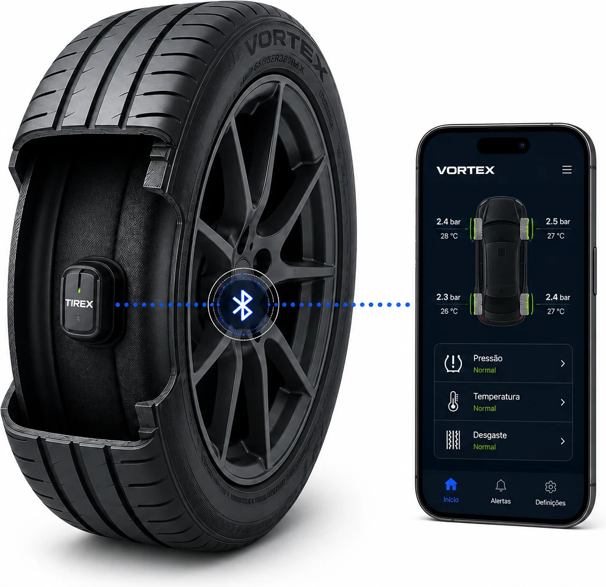
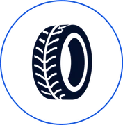
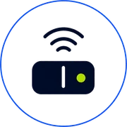
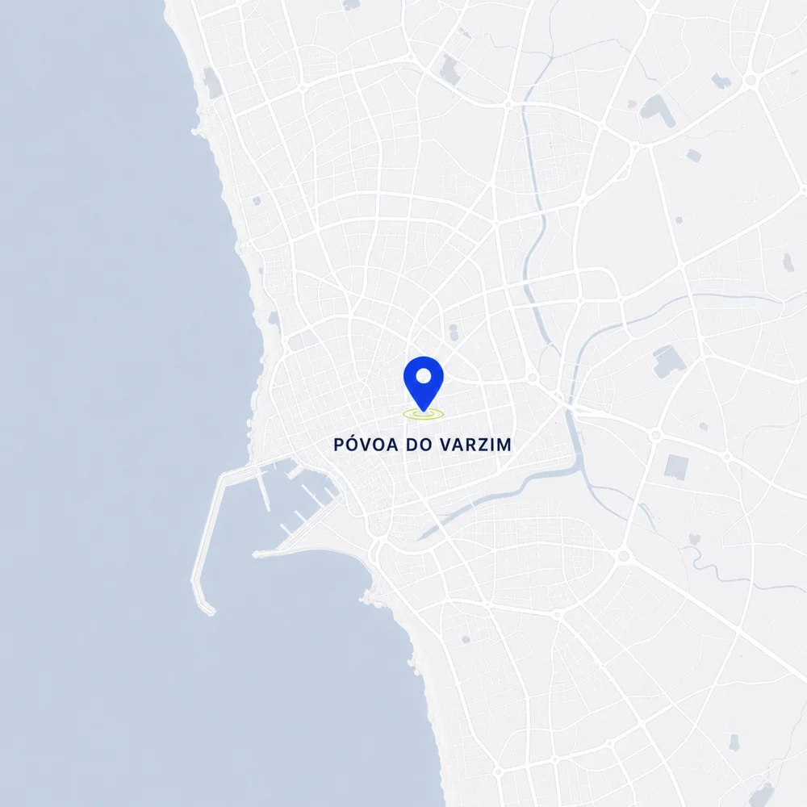

Pressão
Acompanha a pressão dos pneus para uma condução mais eficiente e segura.
O VORTEX é um pneu inteligente que monitoriza pressão, temperatura e desgaste em tempo real.
01 / Produto
O sensor integrado comunica por Bluetooth Low Energy com a aplicação móvel e emite alertas sempre que deteta uma anomalia.
Acompanha a pressão dos pneus para uma condução mais eficiente e segura.
Monitoriza variações térmicas e ajuda a manter a fiabilidade em diferentes condições.
Avalia o piso para apoiar a manutenção preventiva e prolongar a vida útil.

02 / Processo
A TIREX integra engenharia mecânica e eletrónica para transformar dados em segurança rodoviária.

Estrutura de alto desempenho, segurança e durabilidade.

Recolha fiável de dados em condições exigentes.
Sensor protegido e incorporado sem comprometer o pneu.
Testes funcionais, de durabilidade e inspeção final.
03 / Equipa
Cinco colaboradores unidos no desenvolvimento do VORTEX.
04 / Contacto
Póvoa do Varzim, Portugal
+351 938 542 789
Contacto demonstrativo para fins académicos
